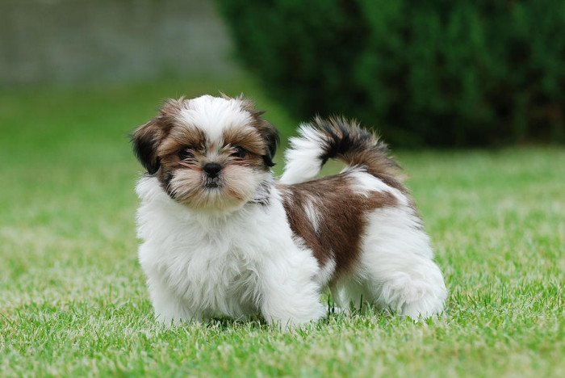

RAZA PEQUEÑA |
|
Shih Tzu Los shih tzu son famosos por su temperamento alegre y feliz, son juguetones y simpáticos, tienden a llevarse bien con personas de todas las edades y con otros perros, así como con mascotas de otras especies. Rara vez encontrarás a un Shih tzu antipático, ya que la mayoría son muy dulces.  |
Pomeranian Son muy inteligentes y les va bien en competencias de obediencia a pesar de ser pequeño tiene rachas de independencia. Conforme crecen, son más dóciles hasta ser verdaderamente perros de pierna. El Pomeranian a menudo es bueno en alertar y emitir alarma y es propenso a ladrar excesivamente. 
|